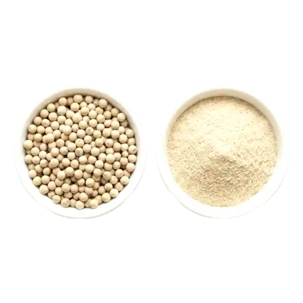

We are certified Ceylon White Pepper suppliers from Sri Lanka, exporting premium decorticated peppercorns with refined earthy flavor to the EU, USA, and 40+ countries worldwide — serving culinary, wellness, and functional food industries.
Ceylon White Pepper is made by soaking fully ripened pepper berries and removing the dark skin, exposing the creamy core with a refined, earthy flavor. Sri Lankan White Pepper has less bitterness and more aroma compared to counterparts from Southeast Asia, making it ideal for light sauces and European cuisine.
Sri Lanka – Wet and Mid Zones
Whole · Cracked · Powdered
Naturally Decorticated · Sun-Dried
Light Sauces · Soups · European Cuisine · Functional Beverages

Compared to white pepper from Southeast Asia, Sri Lankan White Pepper has less bitterness and more aroma, making it superior for delicate dishes.
Our white pepper is naturally decorticated without sulfates. The creamy core is preserved through careful processing, ideal for clean-label brands.
Ceylon White Pepper offers more aroma and refined earthy flavor compared to other varieties, perfect for European cuisine and functional beverages.
Hand-harvested, naturally processed, and carefully graded with complete traceability from farm to pack for quality assurance.
Ideal for light-colored sauces, soups, and dishes where color matters.
Used in functional beverages, digestive blends, and natural medicine.
Traditionally used in Ayurvedic medicine for digestive health benefits.
We work directly with smallholder farmers and cooperatives to ensure clean, traceable, and sustainable pepper cultivation in Sri Lanka.
Organic
Vegan
Gluten-Free
Non-GMO
| Botanical Name | Piper nigrum |
| Forms | Whole · Cracked · Powdered |
| Moisture | < 12% |
| Piperine | 6–10% |
| Packaging | 100g · 500g · 1kg · Bulk Bags |
| Shelf Life | 24 Months |